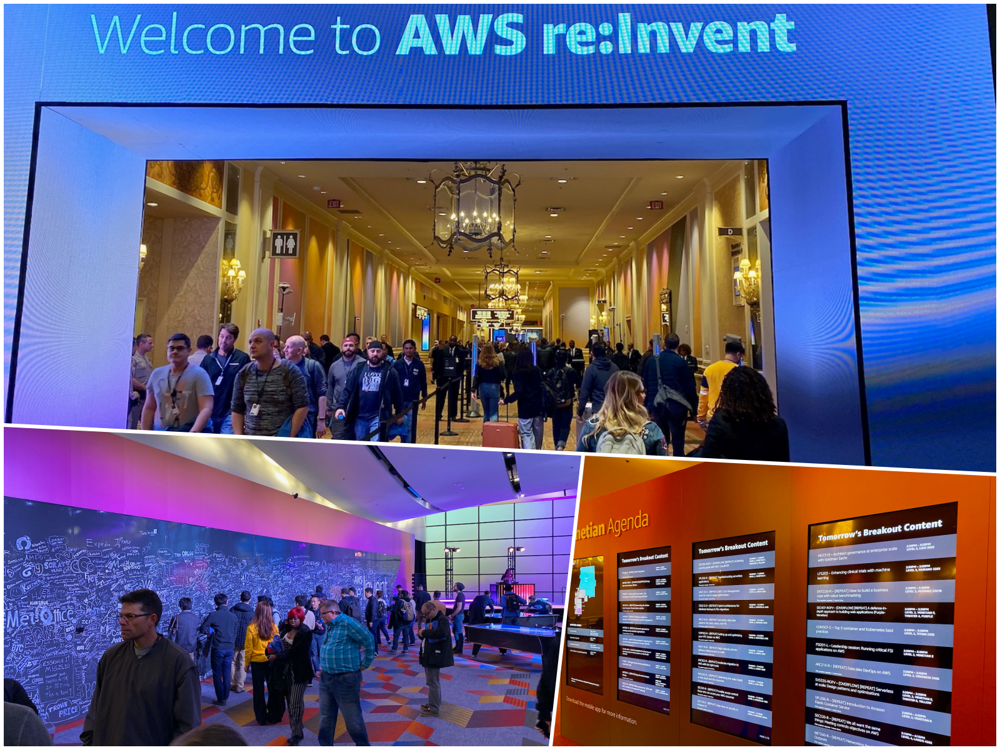
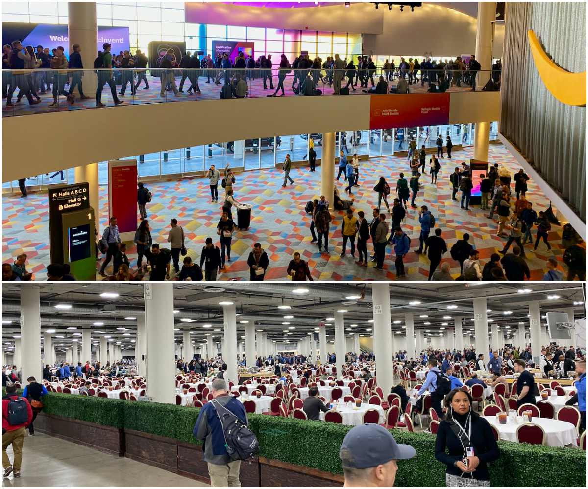
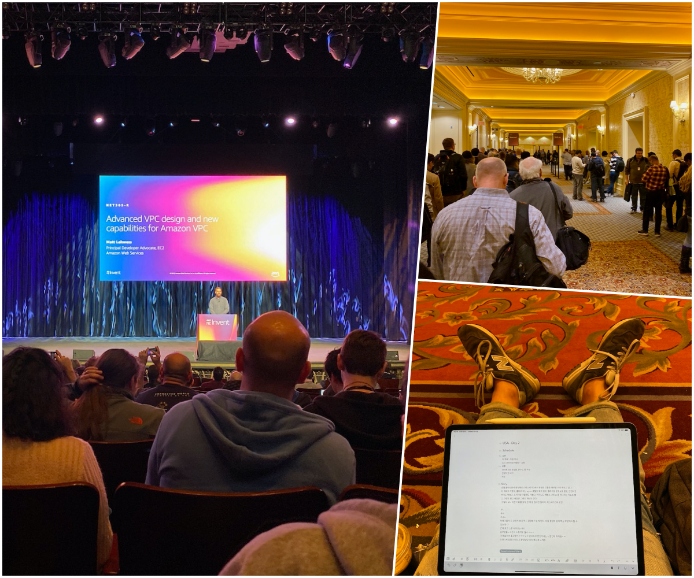
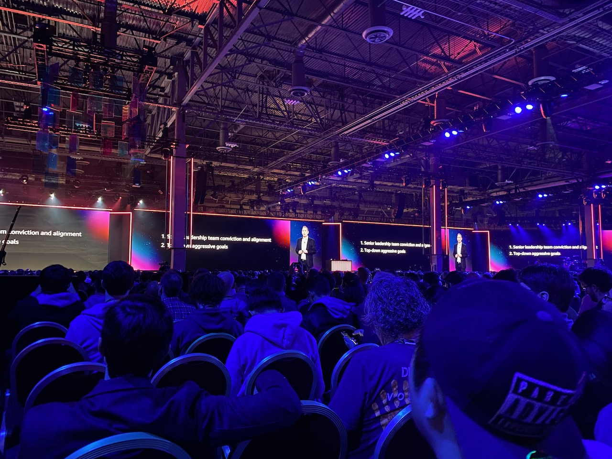
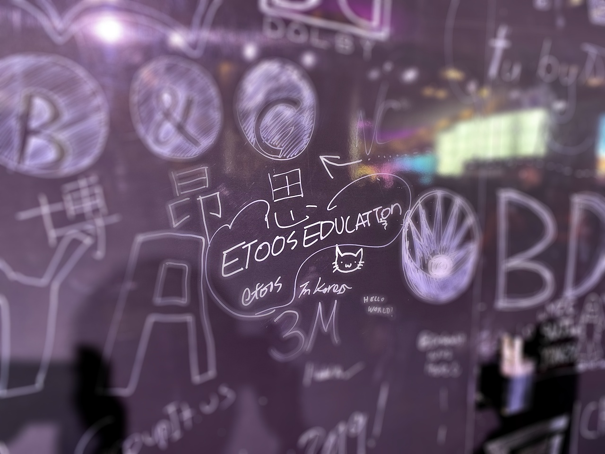

AWS re:Invent 2019 후기
2019년 한 해, 이투스는 모든 시스템을 AWS 클라우드로 전환했습니다. 저에게 2009년 쯤 대학교에서 처음 접했던 AWS는 클라우드라는 흐릿한 개념과 가능성이었지만 지금은 현실이 됐습니다. 클라우드 전환 덕분에 다양한 AWS의 서비스들을 사용하게 되었고 제 관심도 따라 증가했습니다. 게다가 회사에서 AWS re:Invent에 참가할 수 있는 기회가 있어 다녀왔습니다.
불과 몇 년 전과 비교해보면 reinvent의 규모는 어마어마하게 성장했습니다. aws의 사용자 규모와 비례해서 서비스도 늘어나고 그 영역도 넓어지기 때문에 개발자로서 현장에서 느껴보고 싶은 바람이 있었습니다. 물론 키노트를 그렇게 잘한다는 CEO 앤디 제시를 실제로 보고 싶은 마음도 컸구요. 이런 마음으로 일을 하다보니 어느덧 라스베가스였습니다.
약 6만 5천명의 참가자, 2500개 가량의 세션이 열리는 reinvent는 총 6개 호텔에서 동시에 진행됐습니다. 시작 하루 전부터 참가자 등록을 받았는데 입구에 가보니 규모에 입이 떡 벌어졌습니다. 많은 사람들이 신원 확인, 등록증 발급, 기념품 증정을 하고 행사장으로 들어가 구경을 하는 데 전혀 혼잡스럽거나 하질 않았습니다. 호텔 간 이동도 셔틀버스, 모노레일, 우버 등을 이용해서 다닐정도였었고 각각 동선도 달랐지만 정해진 루트로 다니면 길을 잃거나 할 염려도 없었습니다. 그리고 행사장과 로비, 호텔 내외부에 ‘ask me’ 라고 쓰여진 진행요원들이 있어서 많은 도움이 되었습니다. 그래서 저도 숙소에 짐을 풀고 저녁부터 여기저기 둘러보고 즐기기 시작했습니다.

일주일 동안 진행되는 reinvent는 아침부터 저녁까지 세션과 키노트, 엑스포가 쭉 이어지고 저녁에는 각 파트너사들과 밋업, 리캡(Recapitulation)과 같은 다양한 행사들이 라스베가스 곳곳에서 있었습니다. 특히 엑스포에 참여한 업체 규모가 놀라웠는데 IT에 몸을 담고 있는 사람이라면 여기저기서 한 번쯤 들어봤을 업체들이 다 있었습니다. AWS korea와 저희 파트너사인 베스핀 글로벌도 라운지를 마련해서 매일 여러 고객들과 마주치며 얘기할 수 있었습니다.
참가자 전원에게 아침, 점심을 제공했는데 식당에서 먹을 수도 있고 도시락을 받아가서 자유롭게 먹기도 했습니다. 저도 도시락을 받아 혼자 앉아서 먹다가 영국에서 처음 참가한 분과 이야기하며 같이 이렇게 사람 많은 행사는 처음본다며 놀랐습니다. 물론 그 분은 13시간 동안 직항으로 비행기를 타고 온 저에게 피곤하지 않냐며 더 많이 놀랐습니다.

올 해부터는 모든 세션과 키노트는 예약자 우선으로 진행했습니다. 혹시 예약자가 나타나지 않는다면 대기하고 있는 사람들은 선착순으로 입장이 가능했습니다. 인기 있는 세션은 예약도 힘들고 정말 많이 기다려서 들어가게 됐는데 이마저도 저에게는 큰 즐거움이었습니다. 기다리는 동안 다른 나라 사람들과 어떤 분야에서 무엇을 사용하는지 나눌 수 있어서 그랬지 싶습니다. 한 가지 놀라운 점은 그 많은 사람들이 모였는데 막상 얘기해보면 이제 막 사용했거나 도입하려는 사람들이 많았다는 점이었습니다. 국내에서 글과 사진으로 알던 것과 직접 느껴지는 클라우드에 대한 관심은 차원이 달랐습니다. 가볍게 쓰는 스타트업부터 큰 규모로 파트너십을 맺은 회사까지 너나 할 것 없이 클라우드에 매력을 느끼고 있었습니다. 제가 들은 세션은 10개 가량 되는데 그 중에서 몇 세션은 복도에 앉아 기다리기도 했습니다. 아무래도 클라우드 환경에서의 보안과 데이터 관련 세션이 인기가 많았습니다. 그 외 비용 절감 부분이나 생산성을 다룬 세션은 비 개발자도 많은 관심을 보였습니다.

CEO 앤디 제시의 키노트 중 디지털 트랜스포메이션(DX)과 데이터가 기억에 남습니다. 보다시피 수 많은 기업이 클라우드에 올라타고 있고 지금도 클라우드 시장은 성장하고 있고 앞으로도 그럴 것이라는 것이죠. 그러면서 기존 데이터들을 적재하고 분석하기 위한 AWS의 서비스들을 소개하고 그것들을 사용할 때의 가능성들을 이야기 했습니다. 만약 각자의 회사가 클라우드에 대한 고민이 있다면 바로 지금 과감하게 진행해야 한다고 합니다. 저 역시 회사의 디지털 역량을 강화해야 한다는 점을 깊이 느꼈습니다.
실제로 도입 후기를 보여주던 골드만 삭스 CEO의 이야기와 의료 업계 대표의 이야기도 인상적이었습니다. 데이터 분석을 통해 내린 판단들이 실제로 비용 절감을 가져온 내용들은 꼭 어떤 분야에 국한된 게 아니라 모든 회사가 바라는 내용이기 때문입니다. 그리고 그 결과들도 실제 수치를 근거해 보여주다보니 신뢰도도 높았습니다.
 메인 키노트가 열리는 곳 바깥에는 웰컴 사인 보드가 있었는데 셀 수 없이 많은 사람들이 각자의 회사 이름을 남기고 돌아갔습니다. 저도 한켠에 이투스를 새기면서 2020년에는 더 달라질 모습을 마음에 새겼습니다. 많은 사람, 많은 이야기, 나의 미래, 회사의 미래를 생각하게 된 AWS re:Invent는 태어나서 참여한 행사 중 가장 인상깊은 행사입니다. 이제 남은 것은 클라우드에서 즐기는 것입니다
